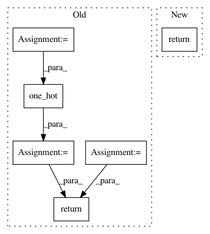

62be0d7d2c880127c817b929dbde2c7fbadf87b1,models/experimental/amoeba_net/amoeba_net_model.py,AmoebaNetEstimatorModel,model_fn,#AmoebaNetEstimatorModel#Any#Any#Any#Any#,295
Before Change
eval_active = (mode == tf.estimator.ModeKeys.EVAL)
is_predict = (mode == tf.estimator.ModeKeys.PREDICT)
features = tf.transpose(features, [3, 0, 1, 2]) // HWCN to NHWC
labels = tf.one_hot(labels, LABEL_CLASSES)
loss, logits = self._build_network(features, labels, mode)
if is_predict:
predictions = {"logits": logits}
return tpu_estimator.TPUEstimatorSpec(mode=mode, predictions=predictions)
host_call = None
train_op = None
if is_training:
global_step = tf.train.get_or_create_global_step()
gs_t = tf.reshape(tf.cast(global_step, tf.int32), [1])
// Setup learning rate schedule
learning_rate = self._build_learning_rate_schedule(global_step)
// Setup optimizer.
optimizer = self._build_optimizer(learning_rate)
update_ops = tf.get_collection(tf.GraphKeys.UPDATE_OPS)
with tf.control_dependencies(update_ops):
train_op = self._build_train_op(optimizer, loss,
global_step=global_step)
if self.hparams.moving_average_decay > 0:
ema = tf.train.ExponentialMovingAverage(
decay=self.hparams.moving_average_decay, num_updates=global_step)
variables_to_average = (tf.trainable_variables() +
tf.moving_average_variables())
with tf.control_dependencies([train_op]):
with tf.name_scope("moving_average"):
train_op = ema.apply(variables_to_average)
lr_t = tf.reshape(learning_rate, [1])
host_call = None
if self.hparams.enable_hostcall:
def host_call_fn(gs, lr):
// Outfeed supports int32 but global_step is expected to be int64.
gs = tf.cast(tf.reduce_mean(gs), tf.int64)
with summary.create_file_writer(self.model_dir).as_default():
with summary.always_record_summaries():
summary.scalar("learning_rate", tf.reduce_mean(lr), step=gs)
return summary.all_summary_ops()
host_call = (host_call_fn, [gs_t, lr_t])
eval_metrics = None
eval_metric_ops = None
if eval_active:
def metric_fn(labels, logits):
Evaluation metric fn. Performed on CPU, do not reference TPU ops.
// Outfeed supports int32 but global_step is expected to be int64.
predictions = tf.argmax(logits, axis=1)
categorical_labels = tf.argmax(labels, axis=1)
top_1_accuracy = tf.metrics.accuracy(categorical_labels, predictions)
in_top_5 = tf.cast(tf.nn.in_top_k(logits, categorical_labels, 5),
tf.float32)
top_5_accuracy = tf.metrics.mean(in_top_5)
return {
"top_1_accuracy": top_1_accuracy,
"top_5_accuracy": top_5_accuracy,
}
eval_metrics = (metric_fn, [labels, logits])
eval_metric_ops = metric_fn(labels, logits)
if self.hparams.use_tpu:
return tpu_estimator.TPUEstimatorSpec(
mode=mode, loss=loss, train_op=train_op,
host_call=host_call, eval_metrics=eval_metrics)
return tf.estimator.EstimatorSpec(
mode=mode, loss=loss, train_op=train_op,
eval_metric_ops=eval_metric_ops)
After Change
eval_metric_ops = metric_fn(labels, logits)
if self.hparams.use_tpu:
return tf.contrib.tpu.TPUEstimatorSpec(
mode=mode, loss=loss, train_op=train_op,
host_call=host_call, eval_metrics=eval_metrics)
return tf.estimator.EstimatorSpec(
mode=mode, loss=loss, train_op=train_op,
eval_metric_ops=eval_metric_ops)
In pattern: SUPERPATTERN
Frequency: 3
Non-data size: 6
Instances
Project Name: tensorflow/tpu
Commit Name: 62be0d7d2c880127c817b929dbde2c7fbadf87b1
Time: 2018-07-17
Author: bignamehyp@users.noreply.github.com
File Name: models/experimental/amoeba_net/amoeba_net_model.py
Class Name: AmoebaNetEstimatorModel
Method Name: model_fn
Project Name: tensorflow/tpu
Commit Name: 9de6656a779e73ac61995bd87044af21b3f37951
Time: 2018-04-19
Author: frankchn@google.com
File Name: models/experimental/amoeba_net/amoeba_net_model.py
Class Name: InputPipeline
Method Name: input_fn
Project Name: dpressel/mead-baseline
Commit Name: ea556a8f0d9fb0ba1a18b8ee3a08df198dbe418d
Time: 2018-11-13
Author: dpressel@gmail.com
File Name: python/baseline/tf/lm/model.py
Class Name: LanguageModelBase
Method Name: create_loss